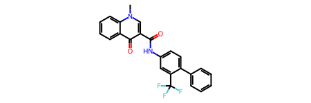
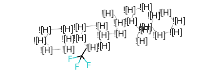
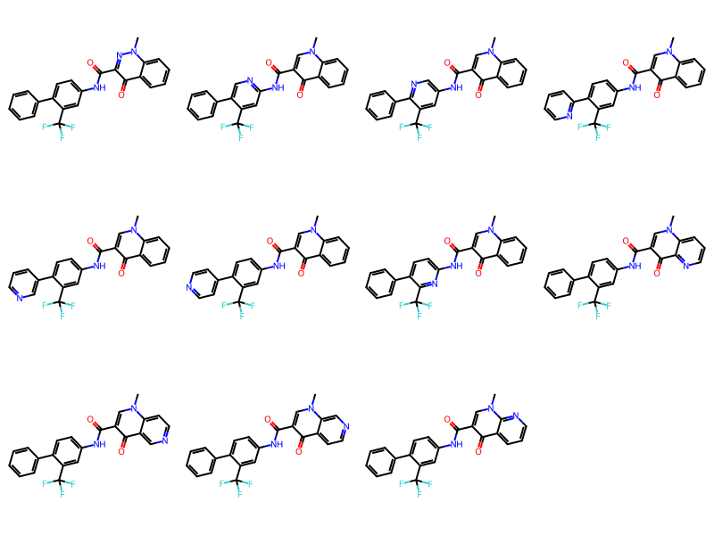
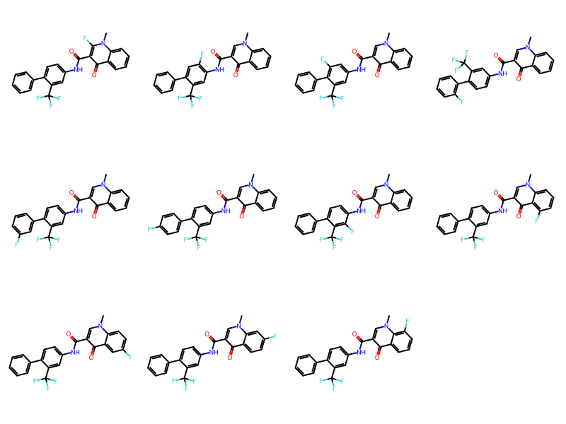
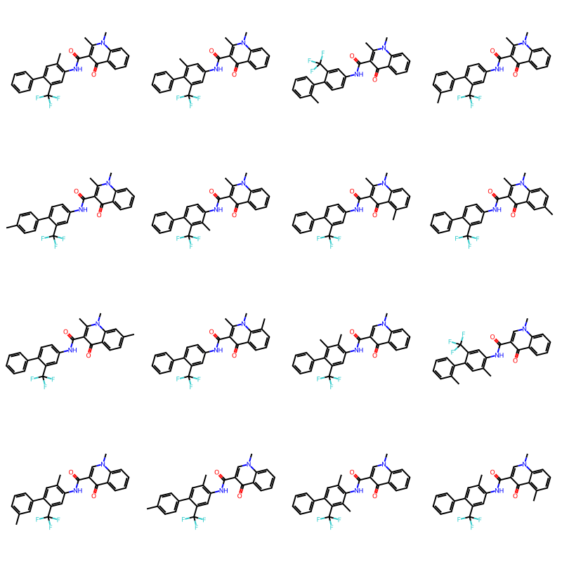

from prody import *
input_pdb = parsePDB('data/2etr.pdb')Position Analogue Scanning(PAS)
Lead Optimization
Perform Positional Analogue Scanning with ligand
https://practicalcheminformatics.blogspot.com/2020/04/positional-analogue-scanning.html
https://practicalcheminformatics.blogspot.com/2022/12/identifying-ring-systems-in-molecules.html
https://pubs.acs.org/doi/10.1021/acs.jmedchem.0c00564
https://practicalcheminformatics.blogspot.com/2020/04/positional-analogue-scanning.html
https://practicalcheminformatics.blogspot.com/2020/03/building-on-fragments-from-diamondxchem.html
https://practicalcheminformatics.blogspot.com/2020/03/building-on-fragments-from-diamondxchem_30.html
https://github.com/PatWalters/fragment_expansion
https://github.com/DrrDom/crem
https://practicalcheminformatics.blogspot.com/2022/12/identifying-ring-systems-in-molecules.html
https://pubs-acs-org.ezproxy.univ-orleans.fr/doi/10.1021/acs.jmedchem.9b02092
https://pubs-acs-org.ezproxy.univ-orleans.fr/doi/10.1021/acs.jcim.2c00860
https://onlinelibrary-wiley-com.ezproxy.univ-orleans.fr/doi/10.1111/cbdd.13985
https://pubs-acs-org.ezproxy.univ-orleans.fr/doi/10.1021/acs.jmedchem.9b01142
https://www.google.com/search?q=Positional+Analogue+Scanning&sourceid=chrome&ie=UTF-8
This notebook will describe on how to add an atom to the ring system. Inspired from the blog post(https://practicalcheminformatics.blogspot.com/2020/04/positional-analogue-scanning.html). Some parts of the code are taken from that blog post.
Additional features: - Add fragment to specific region of interest - Add atom stereo specific to the ring - Add fragment to 3D molecule - Calculate interaction after fragment added
protein = input_pdb.select('protein')
ligand = input_pdb.select('chain A and resname Y27')measure.findNeighbors(protein,4.0,ligand)[(<Atom: CE from 2etr (index 1234)>,
<Atom: O23 from 2etr (index 6473)>,
3.5261898),
(<Atom: CB from 2etr (index 1727)>,
<Atom: C36 from 2etr (index 6476)>,
3.84263),
(<Atom: CB from 2etr (index 1732)>,
<Atom: C36 from 2etr (index 6476)>,
3.9769566),
(<Atom: CB from 2etr (index 1732)>,
<Atom: C35 from 2etr (index 6477)>,
3.8783326),
(<Atom: O from 2etr (index 1624)>,
<Atom: C35 from 2etr (index 6477)>,
3.7216585),
(<Atom: OD1 from 2etr (index 1635)>,
<Atom: C35 from 2etr (index 6477)>,
3.4280102),
(<Atom: CB from 2etr (index 1732)>,
<Atom: C34 from 2etr (index 6478)>,
3.9284542),
(<Atom: OD1 from 2etr (index 1734)>,
<Atom: C34 from 2etr (index 6478)>,
3.5688658),
(<Atom: CG2 from 2etr (index 692)>,
<Atom: C32 from 2etr (index 6480)>,
3.5779414),
(<Atom: OD1 from 2etr (index 1734)>,
<Atom: C41 from 2etr (index 6481)>,
3.5450618),
(<Atom: OD1 from 2etr (index 1635)>,
<Atom: C41 from 2etr (index 6481)>,
3.853823),
(<Atom: CG from 2etr (index 1733)>,
<Atom: N43 from 2etr (index 6483)>,
3.8245695),
(<Atom: OD1 from 2etr (index 1734)>,
<Atom: N43 from 2etr (index 6483)>,
2.7895243),
(<Atom: OD1 from 2etr (index 1635)>,
<Atom: N43 from 2etr (index 6483)>,
2.7911913),
(<Atom: CG from 2etr (index 1634)>,
<Atom: N43 from 2etr (index 6483)>,
3.8788848),
(<Atom: CD1 from 2etr (index 1651)>,
<Atom: C14 from 2etr (index 6485)>,
3.9651945),
(<Atom: N from 2etr (index 1256)>,
<Atom: C16 from 2etr (index 6487)>,
3.7972507),
(<Atom: CB from 2etr (index 803)>,
<Atom: C16 from 2etr (index 6487)>,
3.7334185),
(<Atom: O from 2etr (index 1238)>,
<Atom: C16 from 2etr (index 6487)>,
3.5957477),
(<Atom: CG from 2etr (index 1261)>,
<Atom: C16 from 2etr (index 6487)>,
3.884422),
(<Atom: CA from 2etr (index 1245)>,
<Atom: N11 from 2etr (index 6488)>,
3.9425724),
(<Atom: C from 2etr (index 1246)>,
<Atom: N11 from 2etr (index 6488)>,
3.9601307),
(<Atom: N from 2etr (index 1256)>,
<Atom: N11 from 2etr (index 6488)>,
3.0231633),
(<Atom: CA from 2etr (index 1257)>,
<Atom: N11 from 2etr (index 6488)>,
3.783572),
(<Atom: CB from 2etr (index 803)>,
<Atom: N11 from 2etr (index 6488)>,
3.5249634),
(<Atom: CD1 from 2etr (index 1250)>,
<Atom: N11 from 2etr (index 6488)>,
3.7977254),
(<Atom: CB from 2etr (index 1260)>,
<Atom: N11 from 2etr (index 6488)>,
3.5842628),
(<Atom: O from 2etr (index 1238)>,
<Atom: N11 from 2etr (index 6488)>,
3.925532),
(<Atom: CG from 2etr (index 1261)>,
<Atom: N11 from 2etr (index 6488)>,
3.9491124),
(<Atom: N from 2etr (index 1256)>,
<Atom: C12 from 2etr (index 6489)>,
3.8375065),
(<Atom: CD1 from 2etr (index 1250)>,
<Atom: C12 from 2etr (index 6489)>,
3.8959258),
(<Atom: O from 2etr (index 1259)>,
<Atom: C12 from 2etr (index 6489)>,
3.8083131),
(<Atom: CD1 from 2etr (index 637)>,
<Atom: C12 from 2etr (index 6489)>,
3.592951),
(<Atom: CZ from 2etr (index 2939)>,
<Atom: C12 from 2etr (index 6489)>,
3.633673),
(<Atom: CD1 from 2etr (index 637)>,
<Atom: C13 from 2etr (index 6490)>,
3.7516727),
(<Atom: CZ from 2etr (index 2939)>,
<Atom: C13 from 2etr (index 6490)>,
3.9291472),
(<Atom: CE1 from 2etr (index 2937)>,
<Atom: C13 from 2etr (index 6490)>,
3.8777375),
(<Atom: CD1 from 2etr (index 1651)>,
<Atom: C13 from 2etr (index 6490)>,
3.7308276)]Adding single atom
https://practicalcheminformatics.blogspot.com/2020/04/positional-analogue-scanning.html
from rdkit import Chem
from rdkit.Chem import AllChem
from rdkit.Chem.Draw import MolsToGridImage
from rdkit.Chem import rdDepictor
from itertools import combinationsrdDepictor.SetPreferCoordGen(True)smiles = "CN1C=C(C(=O)Nc2ccc(-c3ccccc3)c(c2)C(F)(F)F)C(=O)c2ccccc12"
my_mol = Chem.MolFromSmiles(smiles)
my_mol
tmplt_molfile = """
Mrv2006 04272015282D
30 33 0 0 0 0 999 V2000
-1.2244 -2.8420 0.0000 A 0 0 0 0 0 0 0 0 0 0 0 0
-0.8627 -2.1005 0.0000 A 0 0 0 0 0 0 0 0 0 0 0 0
-1.3241 -1.4165 0.0000 A 0 0 0 0 0 0 0 0 0 0 0 0
-2.1471 -1.4741 0.0000 A 0 0 0 0 0 0 0 0 0 0 0 0
-2.5087 -2.2156 0.0000 A 0 0 0 0 0 0 0 0 0 0 0 0
-2.0474 -2.8996 0.0000 A 0 0 0 0 0 0 0 0 0 0 0 0
-0.0397 -2.0429 0.0000 A 0 0 0 0 0 0 0 0 0 0 0 0
1.1015 -1.1830 0.0000 A 0 0 0 0 0 0 0 0 0 0 0 0
0.2827 -1.2835 0.0000 A 0 0 0 0 0 0 0 0 0 0 0 0
0.4568 -2.7018 0.0000 A 0 0 0 0 0 0 0 0 0 0 0 0
1.2756 -2.6013 0.0000 A 0 0 0 0 0 0 0 0 0 0 0 0
1.5980 -1.8418 0.0000 A 0 0 0 0 0 0 0 0 0 0 0 0
2.4159 -1.7342 0.0000 A 0 0 0 0 0 0 0 0 0 0 0 0
2.7316 -0.9719 0.0000 A 0 0 0 0 0 0 0 0 0 0 0 0
3.5495 -0.8643 0.0000 A 0 0 0 0 0 0 0 0 0 0 0 0
2.2294 -0.3175 0.0000 A 0 0 0 0 0 0 0 0 0 0 0 0
5.1506 -0.4651 0.0000 A 0 0 0 0 0 0 0 0 0 0 0 0
4.5775 0.1284 0.0000 A 0 0 0 0 0 0 0 0 0 0 0 0
3.7770 -0.0713 0.0000 A 0 0 0 0 0 0 0 0 0 0 0 0
4.1227 -1.4577 0.0000 A 0 0 0 0 0 0 0 0 0 0 0 0
4.9232 -1.2581 0.0000 A 0 0 0 0 0 0 0 0 0 0 0 0
3.8953 -2.2508 0.0000 A 0 0 0 0 0 0 0 0 0 0 0 0
5.9475 -0.2516 0.0000 A 0 0 0 0 0 0 0 0 0 0 0 0
5.5204 -1.8454 0.0000 A 0 0 0 0 0 0 0 0 0 0 0 0
6.3173 -1.6318 0.0000 A 0 0 0 0 0 0 0 0 0 0 0 0
6.5308 -0.8349 0.0000 A 0 0 0 0 0 0 0 0 0 0 0 0
0.0797 -3.3175 0.0000 C 0 0 0 0 0 0 0 0 0 0 0 0
0.5819 -3.9720 0.0000 F 0 0 0 0 0 0 0 0 0 0 0 0
-0.7172 -3.5310 0.0000 F 0 0 0 0 0 0 0 0 0 0 0 0
-0.2360 -4.0797 0.0000 F 0 0 0 0 0 0 0 0 0 0 0 0
23 26 8 0 0 0 0
25 26 8 0 0 0 0
24 25 8 0 0 0 0
21 24 8 0 0 0 0
23 17 8 0 0 0 0
20 22 8 0 0 0 0
17 21 8 0 0 0 0
20 21 8 0 0 0 0
15 20 8 0 0 0 0
19 15 8 0 0 0 0
18 19 8 0 0 0 0
17 18 8 0 0 0 0
14 16 8 0 0 0 0
14 15 8 0 0 0 0
13 14 8 0 0 0 0
12 13 8 0 0 0 0
8 12 8 0 0 0 0
11 12 8 0 0 0 0
10 11 8 0 0 0 0
7 10 8 0 0 0 0
9 7 8 0 0 0 0
8 9 8 0 0 0 0
2 7 8 0 0 0 0
1 6 8 0 0 0 0
5 6 8 0 0 0 0
4 5 8 0 0 0 0
3 4 8 0 0 0 0
2 3 8 0 0 0 0
1 2 8 0 0 0 0
27 29 1 0 0 0 0
27 30 1 0 0 0 0
27 28 1 0 0 0 0
27 10 1 0 0 0 0
M END
"""
tmplt_mol = Chem.MolFromMolBlock(tmplt_molfile)
tmplt_mol
def nitrogen_walk(mol_in, num_N=1):
"""
Perform positional analogue scanning to sequentially replace aromatic cH wth n
:param mol_in: input molecule
:param num_N: number of nitrogens to replace in each analogue
:return: list of analogue molecules
"""
out_mol_list = []
used = set()
aromatic_cH = Chem.MolFromSmarts("[cH]") #c For Aromatic carbon C for aliphatic Carbon
match_atms = [x[0] for x in mol_in.GetSubstructMatches(aromatic_cH)] #Atom index of aromatic atoms matching from input molecule
n_combos = combinations(match_atms, num_N) # Generate combination of atom index for which n to be placed
# if num_N = 1 only one aromtic atom will be replaced for a given molecule instance
# if num_N = 2 two aromatic atoms will be replaced at a molecule instance,
for combo in n_combos:
new_mol = Chem.RWMol(mol_in) # Copy input molecule to new_mol
for idx in combo: #Get aromatic atom to be replaced from combination
atm = new_mol.GetAtomWithIdx(idx) # Get the Atom idx object
atm.SetAtomicNum(7) #Replace the atom by specifying the Atomic number of n : 7
smi = Chem.MolToSmiles(new_mol) # Writing the Nitrogen replaced molecule as smiles
if smi not in used: # Check for smiles exist in output library
used.add(smi)
out_mol_list.append(new_mol) # Add smiles to output smiles list
return out_mol_listn_mol_list = nitrogen_walk(my_mol,1)
[AllChem.GenerateDepictionMatching2DStructure(x,tmplt_mol) for x in n_mol_list]
MolsToGridImage(n_mol_list,useSVG=True,molsPerRow=4)
# Define a function to "walk" an atom (typically F or methyl) around a molecule
def attach_atom(mol_in, atomic_symbol="F", smarts="[cH]", num_sub=1):
"""
Perform positional analogue scanning to sequentially add a single atom substituent
:param mol_in: input molecule
:param atomic_symbol: symbol for atom to be attached
:param smarts: smarts defining the position to be substituted
:param num_sub: number of groups to substitute at each iteration
:return:
"""
pt = Chem.GetPeriodicTable()
atomic_num = pt.GetAtomicNumber(atomic_symbol)
out_mol_list = []
used = set()
query = Chem.MolFromSmarts(smarts)
match_atms = [x[0] for x in mol_in.GetSubstructMatches(query)]
n_combos = combinations(match_atms, num_sub)
for combo in n_combos:
new_mol = Chem.RWMol(mol_in)
for idx in combo:
new_idx = new_mol.AddAtom(Chem.Atom(atomic_num))
new_mol.AddBond(idx, new_idx, order=Chem.rdchem.BondType.SINGLE)
Chem.SanitizeMol(new_mol)
smi = Chem.MolToSmiles(new_mol)
if smi not in used:
used.add(smi)
out_mol_list.append(new_mol)
return out_mol_listfluoro_mol_list = attach_atom(my_mol)
[AllChem.GenerateDepictionMatching2DStructure(x,tmplt_mol) for x in fluoro_mol_list]
MolsToGridImage(fluoro_mol_list,useSVG=True,molsPerRow=4)
Generate a set of positional analogues where all pairs of aromatic “cH” are replaced by methyl groups. Note that only the first 16 positional analogues are shown.
methyl_mol_list = attach_atom(my_mol, atomic_symbol="C", num_sub=2)
[AllChem.GenerateDepictionMatching2DStructure(x,tmplt_mol) for x in methyl_mol_list]
MolsToGridImage(methyl_mol_list[:16],useSVG=True,molsPerRow=4)
This notebook contain short codes to perform different functionalities in Pymol.